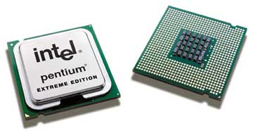

Олег Денисов, Константин Яковлев
Событие, активно обсуждавшееся в ИТ-кругах с момента окончания московского форума IDF 2004, свершилось. 18 апреля 2005 г. корпорация Intel разослала официальное сообщение о начале поставок настольных ПК и рабочих станций на базе двухъядерных платформ.
Параллельно с анонсом платформы были представлены серийные образцы продукции на ее основе, адресованные пользователям. Среди партнеров Intel, первыми освоивших выпуск ПК, спроектированных на новых платформах, крупнейшие поставщики компьютерной техники - компании Alienware, Dell и Velocity Micro. Таким образом, в канун 40-й годовщины закона Мура предположение, высказанное Гордоном Муром в 1965 г. и скорректированное десятью годами позже, стараниями Intel вновь находит подтверждение в лице двухъядерных процессоров нового поколения Intel Pentium Extreme Edition 840.
|  |
| Первый двухъядерный процессор нового поколения Intel Pentium Extreme Edition
840.
|
На момент написания статьи мы не располагали полной информацией о процессоре, однако сведения, приведенные в пресс-релизе, позволяют сделать предположения, правомерность или ошибочность которых определится в ближайшее время. Судя по характеристикам нового процессора, производство которого ведется с соблюдением 90-нм проектных норм, оба ядра, расположенных на одном кристалле, унаследовали идеологию архитектуры Prescott. Косвенно это подтверждает значение тактовой частоты - 3,2 ГГц - процессора, работающего совместно с 800-МГц системной шиной, число транзисторов и площадь кристалла (около 230 млн и 206 мм2 соответственно). Корпус кристалла имеет упаковку FC-LGA5, а сам процессор предназначен для установки в разъем Socket LGA 775. Что касается дополнительных функций, таких, как Extended Memory 64 Technology, Execute Disable Bit, потоковые SIMD-инструкции третьего поколения и, конечно же, Hyper-Threading, они у двухъядерного Pentium EE 840 представлены в полном объеме.
По традиции специально для новой платформы был разработан НМС Intel 955X Express, выполненный по классической схеме на базе связки двух мостов. Отличительная особенность северного моста (микросхема 82955X MCH) - усовершенствованный контроллер памяти, для которого Intel полностью переработала конвейер, предложив новую схему взаимодействия между MCH и модулями ОЗУ - Memory Pipeline Technology (Intel MPT). Благодаря ее скорость обмена данными между компонентами удалось повысить до 10,7 Гбайт/с против 8,5 Гбайт/с, характерной для наборов 925-й серии. Возрос и максимальный объем доступной НМС системной памяти - у Intel 955X Express он составляет 8 Гбайт на два канала ОЗУ, кроме того, набор получил возможность работать с модулями памяти DDR2-667/533 SDRAM. В распространенной Intel информации отмечается, что гибкая схема MPT не накладывает более жестких ограничений на идентичный объем и тайминги одновременно устанавливаемых модулей ОЗУ, будь то двухканальный или одноканальный режим работы системной памяти (технология Intel Flex Memory Technology).
Микросхема южного моста 82801GR ICH7R не претерпела сколько-нибудь существенных изменений. Ее основное отличие от ICH6R касается интерфейса AHCI (Advanced Host Controller Interface), обслуживающего Serial ATA-накопители следующего поколения, оснащенные функцией NCQ (Native Command Queuing). Пропускная способность интерфейса увеличилась вдвое по сравнению с НМС 925/915-й серий и составляет 3 Гбайт/с на каждый из четырех доступных системе каналов. Шина между мостами осталась прежней, а в дополнение к предложенной схеме факультативно южный мост ICH7R может быть оборудован встроенным гигабитным сетевым контроллером Intel PRO 100/1000 LAN и блоком, выполняющим функции управления и мониторинга всей системы (Intel Active Management Technology).
Помимо уже доступного для потребителей процессора Pentium Extreme Edition 840, в текущем квартале Intel планирует объявить линейку процессоров Pentium D, которой, по замыслу компании, предстоит стать массовой платформой для настольных ПК на базе двухъядерных решений в течение последующих двух лет. По прогнозам аналитиков, к концу 2006 г. свыше 70% рынка настольных систем будут оснащены процессорами многоядерной архитектуры. Уже сегодня в работе находится более полутора десятков проектов, так или иначе связанных с многоядерной тематикой (включая сегмент мобильных платформ и серверов).
На момент подготовки публикации это была вся или почти вся информация, которой мы располагали, о двухъядерной платформе. Строго говоря, в рамках предлагаемого обзора мы планировали рассказать о перспективах внедрения многоядерных решений и о проектах, которые ведутся в этом направлении компаниями Intel, AMD и IBM. Однако корпорация Intel скорректировала наши планы, объявив о начале поставок кристаллов на базе двухъядерной архитектуры. Для настольных систем это событие - еще одна знаменательная веха в истории ПК, получивших возможность обрабатывать данные в несколько потоков одновременно. Так, система, оснащенная процессором Pentium Extreme Edition 840, способна обрабатывать до четырех потоков (с учетом включенной функции Hyper-Threading). Стоит ли говорить, какие перспективы открываются перед графическими и мультимедийными станциями, игровыми машинами и ПК, занимающимися научными вычислениями, если их основу будет составлять многоядерная платформа?! Изучению потенциала таких машин мы планируем посвятить отдельный материал в одном из ближайших номеров, а пока предлагаем оценить возможности процессоров для настольных систем из числа тех, что присутствуют в розничной продаже здесь и сейчас (их характеристики приведены в таблице). Подробные результаты тестирования можно найти здесь.
Методика тестированияТестирование центральных процессоров для настольных ПК проходило в несколько этапов. Сначала стенд на базе образца выполнял сценарий, состоявший из набора специализированных синтетических тестов и фирменных тестов журнала PC Magazine. По завершении этого цикла оценивалось быстродействие системы на реальных приложениях. Первую группу составили тесты из комплекта Sandra Professional Unicode (Win64/32/CE x86) 2005 SR1 (сборка 1.10.37) компании SiSoftware, определяющие производительность процессора и подсистемы памяти ОЗУ. Тестовые пакеты PCMark04, 3DMark03 и 3DMark05 (сборки 1.3.0, 3.6.0 и 1.2.0 соответственно) компании Futuremark позволили определить потенциал процессора в составе платформы (отдельный тест CPU Mark) и оценить производительность дисковой и видеоподсистем в 2D/3D-приложениях под управлением API DirectX 9.0c (экранное разрешение 1280x1024, 32-разрядная глубина цвета, параметр вертикальной синхронизации Vsync=Off). Влияние процессора на скорость выполнения типовых офисных приложений, задач формирования Web-контента и устойчивость системы при работе в мультизадачной среде исследовалось с помощью пакетов PC Magazine Business Winstone 2004 и Content Creation Winstone 2004 с подключенными обновлениями версии 1.01 - фирменного комплекта тестов журнала PC Magazine, разработанных корпорацией Ziff Davis Media в сотрудничестве с компанией VeriTest. Заключительная группа тестов была представлена задачами, с которыми процессоры в составе ПК регулярно сталкиваются в повседневной жизни. Потенциал участников тестирования выявлялся на научных вычислениях и инженерных задачах из области САПР, задачах преобразования аудио- и видеопотоков и операциях с архивами данных. Каждый из процессоров после установки в стенд описанной ниже конфигурации последовательно выполнял операции преобразования звукового файла формата WAV в файл MP3 средствами кодека LAME 3.96.1 (операция активно использует возможности встроенных наборов инструкций семейств SSE и 3DNow!). Средствами архиватора WinRAR 3.42 измерялось быстродействие платформы на операциях сжатия файлов (заранее подготовленный массив данных объемом 100 Мбайт состоял из 556 файлов, размещенных в 123 директориях). С помощью ПО Canopus ProCoder 1.5 и MainConcept 1.4.2 (пакет оптимизирован для использования с набором инструкций SSE3) определялась скорость кодирования видеопотока, загружаемого в компьютер с цифровой видеокамеры (в нашем случае режим эмуляции; файл формата DV RAW объемом 651 Мбайт), в файл формата MPEG-2. Пакет DVD Movie Factory 3 компании Ulead Systems помог нам оценить быстродействие системы при выполнении операций формирования DVD-контента (подготовка к рендерингу с последующей записью видеоряда на жесткий диск из исходного файла MPEG-2). С помощью системы нелинейных дифференциальных уравнений воспроизводился один из вариантов применения ПК в качестве инструмента решения научных задач (реальный пример из области квантовой механики, задача оперирует в основном вещественными числами двойной точности и написана на языке Fortran-77; исполняемый код скомпилирован средствами пакета Compaq Visual Fortran 6.6: генерация кода под архитектуру x86, установки по умолчанию; расширенные наборы инструкций не используются). На примере задач из состава пакета SPEC Viewperf 8.0.1 платформам предлагалось выполнить набор из восьми тестов под управлением API OpenGL, которые воспроизводят типовые сценарии расчета трехмерных моделей средствами специализированного ПО, предназначенного для автоматизированного проектирования (включая продукты 3DS Max, CATIA, Maya, Solid Works и т. д.). Еще одна группа тестов, представленная демо-роликами Aquamark3 и X2-The Threat Rolling Demo на базе современных игр (экранное разрешение 1280x1024, 32-разрядная глубина цвета, параметр вертикальной синхронизации Vsync=Off, остальные установки по умолчанию), позволила оценить потенциал процессора в составе систем, выполняющих 3D-приложения, которые предъявляют высокие требования к тандему процессор - ОЗУ и видеоподсистеме (активно используются возможности прикладных интерфейсов DirectX и OpenGL). Кроме того, в рамках испытаний было проведено тестирование процессоров в среде SPEC CPU2000 с последующим кратким анализом полученных результатов. Испытания процессоров проводились под управлением нескольких ОС. Для процессоров Intel мы отобрали четыре стенда на базе НМС Intel (925XE Express, 915P Express, 915G Express) и SIS661FX, а для изделий AMD - пять стендов, основу которых составили НМС ATI Xpress 200, NVIDIA nForce4 SLA, NVIDIA nForce3 250Gb, SiS756 и VIA K8T890. Вначале процессору предлагалось "проявить характер" на платформе Microsoft Windows XP Professional (сборка 2600, с подключенным обновлением Service Pack 2, файловая система NTFS), которая устанавливалась на Serial ATA-жесткий диск семейства Seagate Barracuda 7200.7 емкостью 200 Гбайт. Предварительно для каждой системной платы с сайта производителя загружалась актуальная версия BIOS с последующим обновлением микрокода, подключались драйверы для соответствующих НМС и видеодрайверы для установленных в систему графических плат (ATI Catalyst 5.2 и NVIDIA ForceWare 66.93). Для изучения производительности процессоров под управлением 64-разрядных ОС мы последовательно устанавливали на все стенды Microsoft Windows XP Professional x64 Edition (сборка 3790 с подключенным обновлением Service Pack 1 v1433), а затем и SUSE Linux Professional 9.2 (ядро 2.6.8) компании Novell. Исследуя возможности процессоров в качестве базового компонента для построения мощной игровой станции (система на НМС Intel 925XE Express), мы использовали 3,73-ГГц процессор Pentium 4 Extreme Edition (ядро Irwingdale), 3,46-ГГц Pentium 4 Extreme Edition (ядро Gallatin) и 3,6-ГГц Pentium 4 660 (ядро Irwingdale). Потенциал мультимедийного ПК широкого профиля, собранного на базе НМС Intel 915P Express Intel, 915G Express и SiS661FX, изучался с помощью 3,6-ГГц процессора Pentium 4 560 (ядро Prescott). Функциональные возможности ПК на базе 2,93-ГГц процессора Celeron D 340 (ядро Prescott) мы оценивали на стенде на базе НМС Intel 915P Express. С помощью стенда на НМС NVIDIA nForce4 SLI исследовалась производительность систем на базе процессоров AMD Athlon 64 FX-55 и Athlon 64 4000+ (ядро ClawHammer). Помимо этого, процессоры Athlon 64 4000+ и Athlon 64 3800+ (ядро Venice) проходили испытания в составе стендов на наборах системной логики ATI Radeon Xpress 200, SiS756 и VIA K8T890, а для тестирования процессора Sempron 3100+ (ядро Paris) была выбрана платформа на НМС NVIDIA nForce3 250Gb. Для оценки быстродействия процессоров, работающих совместно с памятью DDR SDRAM, применялась пара 512-Мбайт модулей ОЗУ PC3200 KHX3200ULK2/1G производства компании Kingston (латентность сигнала CAS-2, тайминг 2-2-2-5). Тестирование процессоров, работающих с памятью DDR2 SDRAM, проводилось с 512-Мбайт модулями ОЗУ компаний Corsair Memory и Kingston. С этой целью в стенды устанавливались "парные" 1-Гбайт комплекты Corsair TWIN2X1024A-4300C3PRO (латентность сигнала CAS-3, тайминг 3-3-3-8), Kingston KHX4300D2K2/1G (латентность сигнала CAS-3, тайминг 3-3-3-10) и Kingston KVR533D2N4K2/1G (латентность сигнала CAS-4, тайминг 4-4-4-12). Энергообеспечение стендов было возложено на 550-Вт ATX-блоки питания FSP550-60PLN производства компании FSP Group (http://www.fsp-group.com.tw). В качестве внешней графической платы в системах, оснащенных портом PCI Express x16, выступал ускоритель трехмерной графики на базе графического процессора NVIDIA GeForce 6600GT - EN6600GT/TD/128M/A компании ASUSTeK с объемом видеопамяти 128 Мбайт (в SLI-систему на наборе NVIDIA nForce4 SLI устанавливалась пара идентичных видеоплат). Стендовые испытания платформ, оборудованных AGP-портом, проводились совместно с 3D-ускорителем ASUSTeK Radeon A9800XT/TVD/P256M/A (графический процессор Radeon 9800XT, объем видеопамяти 256 Мбайт). Для инсталляции ПО и рендеринга DVD-контента мы использовали оптический DVD+-RW накопитель DRW-0804P компании ASUSTeK. Копирование образов жестких дисков и их обмен между стендами происходили через сетевой коммутатор GN-GT8S Gigabit Ethernet Smart Switch производства компании Gigabyte Technology. Реальные тактовые частоты процессоров, системной шины и ОЗУ, а также латентность модулей памяти контролировали с помощью утилиты диагностики CPU-Z (текущая версия 1.28 доступна для загрузки по адресу http://www.cpuid.com). |
ОС и компиляторыРасширенное тестирование процессоров для настольных систем предоставило нам уникальную возможность оценить устойчивость работы платформ под управлением различных ОС и составить впечатление о компиляторах, средствами которых оптимизировался код сценариев тестов из состава пакета SPEC CPU2000. Для решения поставленных задач мы отобрали ПО компаний Intel, PathScale, Porthland Group и компилятор, входящий в состав дистрибутива ОС Novell SUSE (все продукты широко используют языки программирования С, C++ и Fortran). Таким образом, эту часть программных продуктов представляли компиляторы:
Компиляторы работали под управлением следующих ОС:
Кроме того, на этапе подготовки и отладки сценария тестов применялось ПО компании Microsoft Visual Studio .NET 2002 SP1 (сборка 7.00.9955), Visual Studio .NET 2003 (сборка 7.10.3077) и Microsoft Platform SDK (сборка 3790.1433). Охарактеризуем кратко каждый из компиляторов. Первым 64-разрядным компилятором для платформы AMD K8 стал продукт компании Porthland Group (http://www.pgroup.com). В настоящее время компания предлагает три продукта - PGI Workstation, PGI Server и PGI CDK (Cluster Development Kit). Компилятор для рабочих станций PGI Workstation 6.0 может работать с многопроцессорными платформами (до четырех процессоров) в 32- и 64-разрядной операционной среде и выполнять трансляцию исходного текста на языках C, C++ и Fortran. Кроме того, продукт позволяет относительно легко портировать приложения, созданные ранее для Unix-серверов и рабочих станций, на новые 32- и 64-разрядные Linux-платформы. Компилятор gcc - стандарт де-факто для ОС Linux. Это некоммерческий продукт, входящий в комплект поставки Novell SUSE Linux Professional 9.2 (http://www.novell.ru). Основное преимущество продукта - в его доступности для разработчиков, которые получают возможность приступить к выполнению намеченных целей практически сразу после установки ОС. Компилятор EKOPath компании PathScale (http://www.pathscale.com) создавался для оптимизации машинного кода применительно к процессору AMD64. Продукт работает под управлением 64-разрядной ОС Linux, распознает SMP-платформы и может компилировать исходные тексты с языков C, C++ и Fortran. Прошлое комплекта EKOPath Compiler Suite 2.0 неразрывно связано с некогда известным продуктом SGI Compiler Suite. В настоящее время компилятор компании PathScale представляет определенный интерес для оценки производительности кластерных решений серверных платформ. Среди тех, кто использует его для своих тестов, отметим компании AMD, IBM, Hewlett-Packard, Linux Networks, SGI и Sun Microsystems. Компиляторы корпорации Intel (http://www.intel.ru), на наш взгляд, предоставляют в распоряжение программистов наиболее развитые средства оптимизации приложений. В частности, распознавание прикладным ПО потоковых SIMD-расширений в подавляющем большинстве случаев - заслуга именно Intel Compiler. Продуктовая линейка компиляторов Intel одна из самых представительных. Сегодня компания предлагает полный спектр ПО для разработчиков: помимо собственно компиляторов для ОС Windows (32- и 64-разрядных версий), Linux, Windows CE .NET, Palm OS и EFI Byte Code, продуктовую линейку дополняют анализаторы, отладчики, трассировщики, библиотеки и ряд служебных утилит. По мере появления новых 64-разрядных процессоров от Intel и AMD, а также процессоров, основу которых составляют многоядерные кристаллы, можно не без оснований утверждать, что интерес к компиляторам Intel будет только возрастать. Изучение возможностей компиляторов в ходе тестирования процессоров показало прекрасную совместимость продуктов Intel с теми платформами, на которых проводились исследования. Кроме того, продукты Intel отличает высокая скорость работы и результативность, в большинстве случаев гарантирующая ожидаемый результат по итогам оптимизации. В рамках предлагаемого обзора, на наш взгляд, именно Intel Compiler 8.1 более других заслуживает почетного упоминания в разделе "Выбор редакции".
|
Intel Pentium 4 Extreme Edition
Семейство процессоров Pentium 4 Extreme Edition (далее EE) разрабатывалось специально для рынка высокопроизводительных игровых ПК и мощных мультимедийных станций. В нашем тестировании приняли участие две старшие модели с тактовыми частотами 3,46 и 3,73 ГГц. Необходимо отметить, что 3,73-ГГц Pentium 4 EE принадлежит к новому поколению процессоров Intel, анонс которых состоялся в конце I квартала этого года. В отличие от предшественников, ядро Irwindale нового процессора проектировалось с соблюдением 90-нм проектных норм, при этом круг возлагаемых на него задач по сравнению с ядром Prescott существенно расширен.
Процессор получил в свое распоряжение более скоростную системную шину (ее тактовая частота увеличена до 1066 ГГц), технологию Intel EM64T, позволяющую процессору работать с 64-разрядными приложениями, и функцию Execute Disable Bit (XD-bit), предназначенную для блокирования на аппаратном уровне исполняемого кода, вызванного последствиями вирусной атаки. Кроме того, по сравнению с ядром Gallatin, на котором выполнен 3,43-ГГц Pentium 4 EE (также принявший участие в нашем тестировании), структура кэш-памяти у Irwindale модифицирована. Кэш данных L1 увеличен с 8 до 16 Кбайт, а общий объем кэш-памяти 1-го уровня (кэш данных и кэш инструкций) составляет теперь 28 Кбайт против 20 Кбайт у Gallatin. В новом ядре значительно увеличен объем кэш-памяти L2 (с 512 Кбайт до 2 Мбайт), а 2-Мбайт кэш-память L3, характерная для Gallatin, полностью отсутствует. Совместно с инструкциями SSE3, отныне доступными процессорам семейства Pentium 4 EE, такое перераспределение кэш-памяти в Irwindale сыграло на руку приложениям, интенсивно использующим вычисления с плавающей точкой, о чем наглядно свидетельствуют результаты выполнения тестовых пакетов, прошедших SSE-оптимизацию.
Эффективность такого подхода подтверждают и результаты испытаний процессоров на тестах SPEC CPU2000, большинство задач которых откомпилировано с учетом доступных процессорам расширенных наборов инструкций. По сравнению с типичными x86-наборами команд проведенная нами оптимизация кода заметно повысила скорость выполнения операций. В этом смысле достаточно показательны результаты Pentium 4 EE по итогам задачи на решение системы нелинейных дифференциальных уравнений двумя разными способами (x86-вариант и оптимизированная задача, которую мы включили в пакет тестов SPEC CPU2000). Превосходство Intel Pentium 4 EE над его прямым конкурентом - процессором AMD Athlon 64 FX достаточно очевидно. Стоит, правда, отметить, что далеко не всегда разработчики утруждают себя поиском новых решений, способных сократить время выполнения процессором отдельных операций, обычно предпочитая оставить все как есть. Переработка приложений зачастую требует дополнительных инвестиций, предполагает значительные трудозатраты и наличие высококвалифицированных специалистов. На наш взгляд, именно поэтому выход новых версий ПО, способных задействовать потенциал процессора "на все сто", может быть отложен на год-полтора или даже больше.
Подводя краткие итоги нашего знакомства с двумя новыми процессорами семейства Pentium 4 EE, прежде всего отметим устойчивость системы во всех без исключения тестах и результаты, показанные этими моделями. В контексте вышесказанного добавим, что исследование поведения процессоров Intel (как, впрочем, и продуктов AMD) совместно с 64-разрядной ОС компании Microsoft (мы использовали так называемый Release Candidate-вариант финальной версии, выпуск которой запланирован на 2006 г.) не является первоочередной задачей данного обзора. В этой связи к показателям изделий обеих компаний следует относиться с известной долей снисходительности.
При сравнении быстродействия процессоров в различного рода задачах обращают на себя внимание очень близкие результаты, продемонстрированные топ-моделями Intel и AMD. За прошедший год процессорам Athlon 64 FX удалось значительно выровнять ситуацию, сократив отставание, а в ряде случаев и опередив конкурента при выполнении синтетических 3D-тестов пакета PCMark04, позволяющего выявить интегральную производительность системы и ее составляющих, оптимизированных под инструкции MMX/SSE/SSE2. В этом платформе AMD содействовали прогрессивная шина PCI Express и режим двухканальной работы модулей ОЗУ. Тем не менее мы отдали предпочтение продукту Intel, отметив знаком отличия "Выбор редакции "BYTE/Россия" процессор Pentium 4 Extreme Edition 3,73 ГГц, потенциал ядра и скоростной шины которого по мере появления на рынке памяти DDR2 следующего поколения должен раскрыться достаточно скоро. К ожидаемым переменам новый 64-разрядный продукт корпорации готов уже сейчас.
Intel Pentium 4
Анонс обновленной линейки процессоров Intel Pentium 4 600-й серии состоялся одновременно с первым официальным представлением на публике 3,73-ГГц процессора, относящегося к семейству Extreme Edition. Такое совпадение не случайно, поскольку указанные процессоры имеют одно и то же ядро - в обоих случаях "пламенным мотором" выступает Irwindale. Различие же касается частоты системной шины, которая у Pentium 4 6xx составляет 800 МГц против 1066 МГц у Pentium 4 EE. Напомним, что, начиная с III квартала 2004 г., компания Intel ввела в обращение так называемый процессорный номер, который присваивается каждой модели опосредованно, учитывая ее основные характеристики. В частности, четыре новые модели серии 6xx получили индексы 630, 640, 650 и 660, при этом частоты их лежат в диапазоне от 3,0 до 3,6 ГГц с шагом 200 Мгц соответственно.
Если сравнивать новую линейку процессоров с предшественниками на ядре Prescott, сразу обращает на себя внимание ряд встроенных в ядро дополнительных функций, которые позволяют позиционировать процессоры для перспективных, ранее недоступных изделиям Intel этой ценовой категории, сегментов рынка. Так, технология Enhanced Memory 64 Technology (EM64T) открывает процессору доступ к 64-разрядным расширениям архитектуры x86, а Intel SpeedStep, позаимствованная у мобильных систем, предназначена для эффективного управления энергопотреблением. Все модели семейства Pentium 4 6xx оснащаются функцией Execute Disable Bit, призванной на аппаратном уровне совместно с ОС поставить заслон перед вирусами, запрещая выполнение подозрительных команд, действующих в обход общепринятых правил.
Касаясь технологических аспектов производства новых процессоров, отметим, что ядро Irwindale принципиально отличается от своего предшественника не только по числу транзисторов и площади кристалла (используемый материал и технологические нормы производства у них одни и те же). Применительно к существующим 90-нм проектным нормам, с соблюдением которых выпускаются модели Pentium 4 500-й серии (ядро Prescott), так называемый напряженный кремний (strained silicon; здесь уместнее говорить о "растянутой" кремниевой решетке групповой 300-мм заготовки) более не обеспечивает требуемого выхода годных кристаллов, способных работать на частотах выше 3,8 ГГц. Потолок, которого достигли процессоры этой серии, заставил инженеров Intel параллельно заниматься разработкой ядра-клона. Именно ему предстоит на какое-то время закрыть потребности процессоров широкого профиля, вплотную приблизив частоту моделей этой ниши к заветной планке барьера в 4 ГГц.
Однако вернемся к реальным возможностям процессоров 600-й серии, уже доступных пользователям. Насущная потребность в скорейшем разрешении проблемы резко возросшего энергопотребления процессоров и неразрывно связанного с ним тепловыделения, а значит, и эффективного отвода тепла, предопределили появление технологии ПК Intel SpeedStep, теперь уже в новом варианте - для десктопов. Реализация технологии для настольных ПК предполагает наличие у ядра трех механизмов управления питанием процессоров - C1E, TM2 и EIST (совместно с ОС Microsoft Windows XP с подключенным обновлением Service Pack 2). Всеми перечисленными функциями ядро Irwindale обладает в полном объеме. Представители компании отмечают, что, регулируя тактовую частоту и напряжение питания за счет указанных механизмов, в грамотно спроектированной системе удается снизить энергопотребление без значительного снижения производительности. С этой целью на различных режимах работы изменяется как множитель тактовой частоты системной шины, так и напряжение питания ядра. Согласно официальным документам, применительно к процессорам Pentium 4 6xx это достигается тремя способами: C1E (состояние расширенной блокировки) активируется по команде Halt (прекратить активность); EIST (расширенная технология Intel SpeedStep) включается по требованию ОС в зависимости от нагрузки на процессор; TM2 (температурный мониторинг) работает по запросу процессора в зависимости от температурной нагрузки. Для понимания базовых принципов этих механизмов следует иметь в виду, что вариативность тактовой частоты позволяет сократить динамическое энергопотребление, а более низкое напряжение питания дает возможность уменьшить ток утечки и потери мощности. Новые процессоры могут изменять оба параметра в любое время сообразно выполняемым задачам, причем номинал напряжения питания ядра контролируется встроенным стабилизатором. Вполне логичной представляется и сама схема процесса, когда перед изменением напряжения сначала изменяется тактовая частота. Это позволяет контролировать процессы, не подвергая кристалл риску выхода из строя.
Ядру Irwindale доступны два вида функции C1E. При каждом запуске команды Halt (доступна только средствами ОС) процессор входит в неактивное состояние (в терминах Intel - состояние C1), которое принято за установленный стандарт состояния низкого энергопотребления. По данным Intel, в этом случае до 90% тактовых импульсов останавливаются и только 10% продолжают движение на полной скорости. Перевод системы в состояние C1 возможен на любой частоте вплоть до миллисекунд, при этом пребывание системы в этом состоянии сильно зависит от текущих процессов (активных и фоновых приложений). Процесс неактивности завершается в результате прерывания (команды от таймера, подсистем ввода-вывода и т. п.). Отличие второй функции C1E (расширенное состояние неактивности) от C1 заключается в том, что множитель тактовой частоты шины уменьшается до минимального значения, при этом параллельно понижается и напряжение питания ядра. В результате этих действий энергопотребление процессора становится еще более низким, чем в состоянии C1.
Еще одна особенность процессоров Pentium 4 6xx, оснащенных технологией Intel SpeedStep, - температурный мониторинг (TM). Ядру Irwindale доступны два режима - TM1 и TM2, характерных для функции мониторинга. Как только температура ядра достигает пороговой температуры, режим TM1 автоматически включает механизм уменьшения рассеиваемой процессором мощности за счет модуляции тактовой частоты. Благодаря TM1 рассеиваемую мощность удается снизить приблизительно на 50%. Необходимо добавить, что процессоры, оснащенные этой функцией, имеют встроенный датчик температуры, калибруемый на заводе-изготовителе.
В отличие от TM1 режим TM2 позволяет изменять тактовую частоту и напряжение питания ядра процессора. По данным Intel, применение этой схемы позволяет эффективно охлаждать процессор (согласно статистике приведенных компанией измерений - до 40%) без серьезного ущерба для производительности системы. Заметим, что из двух режимов TM2 доступен только семейству Pentium 4 6xx, в то время как TM1 присутствует и у этой серии, и у Pentium 4 EE (ядро Irwindale).
Последний из трех представленных в новом ядре механизмов, EIST, работает совместно с ОС и взаимодействует с ней через интерфейс ACPI. При незначительных нагрузках на процессор выбирается более низкая тактовая частота. Соответственно в тот момент, когда нагрузка возрастает, увеличивается и тактовая частота. Процессоры, оснащенные EIST, распознают и могут применять несколько комбинаций двух параметров (напряжение и тактовая частота), причем для выполнения возложенных на SpeedStep функций используются одни и те же элементы схемотехники, что и в функциях C1E и TM2. Резюмируя, отметим, что встроенный в ядро Irwindale комплекс мер, направленных на снижение энергопотребления, фактически открывает перед процессором на его основе перспективы применения в системах форм-фактора BTX, массовое производство которых уже не за горами.
Если говорить о скорости вычислений, оптимизированных под SSE-инструкции, по данным Intel, прирост производительности в системе с 3,6-ГГц Pentium 4 660 по сравнению с Pentium 4 560 с тем же значением тактовой частоты может составлять в среднем от 7 до 10%. Именно эти модели мы и устанавливали в стенды, оценивая возможности процессоров с ядрами Irwindale и Prescott. Необходимо сказать, что в настоящее время Intel предлагает пять моделей процессоров 500-й серии в двух модификациях, выполненных с соблюдением 90-нм проектных норм. Индекс J в обозначении (после процессорного номера) говорит о том, что данному процессору доступна функция Execute Disable Bit. В настоящий момент старшая модель этой серии - Pentium 4 570J 3,8 ГГц, оснащенная, как и все процессоры данного семейства, 1-Мбайт кэш-памятью L2 и работающая на частоте системной шины 800 МГц.
На примере тестовых испытаний мы смогли убедиться в том, что 2-Мбайт кэш-память L2 совместно с функцией Hyper-Threading обеспечивают модели Pentium 4 660 более высокую по сравнению с конкурентами производительность и быстрый отклик системы в задачах, связанных с интенсивными вычислениями. Процессор одинаково уверенно ведет себя, выполняя целочисленные операции, задачи преобразования цифрового контента и приложения, в которых широко используются операции с плавающей точкой. Подводя итоги выступления процессоров Intel в этом классе, отметим хорошую устойчивость и сбалансированность платформ, а также готовность модельного ряда Pentium 4 6xx к совместной работе с 64-разрядными ОС. Суммируя все сказанное, в категории процессоров для ПК широкого профиля мы отметили продукт Intel Pentium 4 660 знаком отличия "Выбор редакции".
Intel Celeron D
В продуктовом портфеле Intel модельный ряд процессоров Celeron выглядит наиболее представительным. Сегодня компания предлагает семь моделей, объединенных торговой маркой Celeron D (исполнение Socket 478 и Socket LGA 775). Около года понадобилось Intel, чтобы полностью перевести производство этих процессоров на технологию с соблюдением 90-нм проектных норм. Благодаря новому ядру Prescott удалось повысить до 533 МГц частоту процессорной шины и существенно увеличить объем кэш-памяти L1 и L2. По числу транзисторов в ядре Celeron D сравнялся с моделями Pentium 4 500-й серии, получив при этом дополнение к расширенному набору SSE-команд потоковые SIMD-расширения третьего поколения. Среди прочих характеристик отметим упреждающее исполнение команд, возможность анализа потока данных, 28-Кбайт кэш-память L1 (включая 16-Кбайт кэш данных) без блокировок. Ядро процессора использует для вычислений две независимые кэш-памяти первого уровня, одна из которых используется для команд, а другая - для данных. Повышение производительности достигается за счет быстрого доступа к данным, присутствующим в кэше. Примечательно, что модели в исполнении для Socket LGA 775 оснащаются функцией Execute Disable Bit. В то же время модельный ряд процессоров Celeron поставляется с отключенной функцией Hyper-Threading.
Согласно принятым обозначениям, вся линейка 300-й серии полностью принадлежит семейству Celeron D, при этом тактовые частоты моделей укладываются в диапазон 2,26-3,06 ГГц. В тестах мы оценивали потенциал Celeron D, взяв за основу одну из старших моделей - 2,93-ГГц Celeron D 340. Имея возможность сравнить результаты тестирования с показателями 2,8-ГГц процессора Celeron 4 (исполнение Socket 478, система на базе НМС Intel 865P, 1 Гбайт ОЗУ DDR266 SDRAM), отметим возросшее быстродействие нового поколения Celeron во всех без исключения операциях. По нашим наблюдениям, разница в показателях составила от 25 до 50% при том, что розничная цена на продукт осталась практически неизменной.
Безусловно, процессору сложно мериться силами с моделями семейства Pentium 4 по части быстродействия при выполнении типовых офисных приложений и задач, связанных с преобразованием мультимедийного контента. Строго говоря, таких задач перед ним никто и не ставил. Прямым оппонентом Celeron D сегодня следует считать семейство AMD Sempron, с которым мы и сравнивали показатели модели Celeron D 340. С другой стороны, ПК начального уровня (на них и рассчитан в первую очередь продукт Intel), оснащенные старшими моделями Celeron D, вполне способны составить самую серьезную конкуренцию прошлогодним системам на базе 3-ГГц Pentium 4, о чем красноречиво свидетельствуют результаты фирменных тестов журнала PC Magazine. По нашему мнению, Celeron по-прежнему можно считать оптимальным выбором для построения машин бюджетной серии, при этом соотношение цена/производительность, которую обеспечивает этот процессор, окажется едва ли не лучшей среди всех показателей для настольных систем, оснащенных куда более мощными процессорами.
Как и следовало ожидать, преимущество Celeron перед Sempron проявилось прежде всего в тех приложениях, где доминировала новая архитектура Socket LGA 775 - PCI Express. Скоростная память и быстрый графический интерфейс позволили изделию Intel обойти конкурента в тестах Futuremark, играх и в ряде приложений, занятых обработкой цифрового контента. В остальных случаях наблюдался относительный паритет. Оснастив ПК процессором Celeron D 340, пользователь вправе рассчитывать на вполне комфортные условия для работы с офисными пакетами, Интернетом и отдельными мультимедийными задачами. При разрешениях до 1280x1024 не станут разочарованием и современные игры, надо лишь подобрать подходящий графический ускоритель.
AMD Athlon 64 FX
Компания AMD изначально позиционировала процессоры семейства Athlon 64 FX для рынка высокопроизводительных рабочих станций широкого профиля и мощных игровых компьютеров, которым предстоит иметь дело с передовыми технологиями обработки трехмерной графики и звука на ПК. В настоящее время модельный ряд этих 64-разрядных процессоров представлен двумя продуктами, среди которых наибольший интерес для нас представляет Athlon 64 FX-55. Ядро ClawHammer процессора, работающего на тактовой частоте 2,6 ГГц, выпускается с соблюдением 0,13-мкм проектных норм по технологии SOI (silicon-on-insulator). По сравнению с процессорами Athlon 64 FX первого поколения (ядро SledgeHammer) в новом процессоре переработан встроенный контроллер памяти, а в рамках архитектуры увеличена пропускная способность транспортной магистрали AMD HyperTransport и частота процессорной шины. Теперь скорость обмена данными по ней может достигать 8 Гбайт/с, в то время как пропускная способность канала памяти в полнодуплексном режиме осталась на прежнем уровне - 6,4 Гбайт/с. В отличие от первых FX-процессоров, рассчитанных на совместную работу с регистровыми модулями ОЗУ SO-DIMM, ядро ClawHammer получило возможность работать со стандартными модулями DDR400/333 SDRAM и задействовать двухканальный режим работы ОЗУ. Перевод семейства Athlon 64/64 FX на единый унифицированный разъем Socket 939 естественным образом коснулся и модели FX-55.
Именно этот процессор принял участие в нашем тестировании в составе платформы на наборе системной логики nForce4 SLI компании NVIDIA. Тандем двух компонентов, каждый из которых по-своему уникален, предопределил высокое быстродействие платформы. В большинстве случаев ей удавалось обойти соперника в лице испытательного стенда на базе 3,73-ГГц Intel Pentium 4 Extreme Edition и системной платы на НМС Intel 925XE Express. Исключение составили те случаи, когда тестируемые приложения прошли оптимизацию кода, предполагающую ускоренное выполнение инструкций потоковых SIMD-расширений. Сказанное в полной мере относится к тестовому пакету SPEC CPU2000 и некоторым приложениям, предназначенным для обработки мультимедийного контента.
Устойчивость - пожалуй, единственное, чего недоставало платформе на базе продукта AMD. Переоценить этот критерий для рабочих станций, которые часами, а иногда и сутками "перемалывают" поставленные задачи, невозможно. На наш взгляд, ответственность за нестабильную работу системы должны поровну разделить и процессор, и набор микросхем. Если отладить взаимодействие, им вполне по силам будут гораздо более серьезные задачи, чем игровые приложения, где платформа выступала вне конкуренции. Потенциал для этого у Athlon 64 FX-55, безусловно, есть. Истинным поклонникам продукции AMD, "замахнувшимся" на топовую модель компании, остается только ждать отлаженных драйверов и присматривать подходящий блок питания (по нашим данным, его мощность должна составлять не менее 420 Вт). Предполагаем, что средства на приобретение далеко не дешевого комплекта у них уже имеются.
AMD Athlon 64
За прошедший год, если взять за точку отсчета наше прошлое тестирование процессоров для настольных систем (см. "BYTE/Россия", No 5'2004, с. 56), среди процессоров компании AMD наибольшие изменения коснулись семейства Athlon 64. Модели среднего ценового диапазона, они с успехом могут стать основой для построения скоростных мультимедийных машин широкого профиля, предметом вожделения иных поклонников компьютерных игр, начальным импульсом для музыкантов, собственными силами создающих домашнюю студию звукозаписи, или дизайнеров, осваивающих новые графические и анимационные горизонты. В каждом из предложенных вариантов применение процессоров с торговой маркой Athlon 64 будет вполне обоснованно и с точки зрения производительности, и в плане цены.
В настоящий момент на рынке присутствуют девять продуктов этой серии, причем только пять из них предназначены для установки в процессорный разъем Socket 939. Потенциал старших моделей, имеющих процессорный рейтинг 3800+ и 4000+, мы изучили в рамках проведенного тестирования. Несмотря на то что тактовая частота процессоров одинакова, они являются типичными представителями разных поколений Athlon 64. Модель 4000+ производится с соблюдением 0,13-мкм проектных норм (ядро ClawHammer) по SOI-технологии, в то время как 3800+ уже "освоил" 90-нм проектные нормы (ядро Venice). Различаются процессоры и по объему кэш-памяти L2: у Athlon 64 3800+ она вдвое меньше и равна 512 Кбайт, что не мешает AMD связывать особые надежды с ядром, которое использует этот процессор. Все дело в том, что именно Venice использует технологию DSL (Dual Stress Liner), в разработке которой, помимо AMD, самое непосредственное участие принимала компания IBM. Не вдаваясь в подробности DSL-технологии, отметим, что она создавалась для тех же целей, что и "напряженный"", или "растянутый", кремний, широко применяемый в производстве Intel Pentium 4 (ядра Prescott и Irwindale). Согласно доступной официальной информации, основное отличие технологии, предложенной AMD и IBM, касается ее реализации в схемах PMOS-NMOS-транзисторов (p- и n-каналы соответственно) и применения в качестве основы нитрида кремния вместо материала на базе кремний-германиевого соединения. По оценкам специалистов, за счет DSL-технологии скорость срабатывания транзисторов может быть увеличена приблизительно на 25% по сравнению с традиционными способами производства подложек. Кроме того, практика показывает, что применение методов DSL не влияет на себестоимость конечного продукта и не приводит к снижению процента выхода годных изделий. Комбинация двух технологий - SOI и DSL, по мнению инженеров обеих компаний, позволит поднять планку тактовых частот будущих процессоров до уровня 3 ГГц.
Одной из основных проблем, с которой столкнулись первые 64-разрядные процессоры AMD, была ограниченная совместимость процессора с отдельными модулями ОЗУ. В частности, работоспособность системы с одновременно установленными четырьмя односторонними модулями PC3200 SDRAM оставляла желать лучшего. Установка двухсторонних модулей приводила к тому, что система отказывалась работать в режиме DDR400, сбрасывая частоту подсистемы памяти до значения 333 МГц. Переработанный контроллер памяти ядра Venice, судя по нашим результатам, лишен указанных недостатков. Кроме указанных изменений, процессор получил возможность работать с набором SSE3-инструкций. В результате модели Athlon 64 3800+ доступен полный комплект потоковых SIMD-расширений, предложенных компаниями Intel и AMD.
Завершая краткое знакомство с новым ядром, необходимо отметить, что различные партии Venice, скорее всего, будут иметь некоторый разброс характеристик, касающихся напряжений питания. В различных документах приводятся значения от 1,35 до 1,4 В, и при этом заявляется, что типовая рассеиваемая мощность кристалла останется на прежнем уровне. Все остальные характеристики ядер (включая реализованную в них функцию Qool'n'Quiet), на базе которых продолжают выпускаться Athlon 64, идентичны.
В наших тестах оба процессора продемонстрировали достаточно высокую производительность, в большинстве случаев на равных конкурируя с оппонентами из стана Intel. В этой связи хотелось бы отметить более высокий запас прочности ядра Venice и неплохую совместимость предоставленных для тестирования моделей с платформами на базе НМС от четырех поставщиков системной логики для архитектуры AMD K8. Востребованность продуктов на основе ядра Venice не вызывает сомнений. Для полного успеха ему необходимо совсем немного - взвешенная ценовая политика и грамотные маркетинговые шаги. Все остальное уже имеется…
AMD Sempron
Официальный анонс процессорного семейства Sempron компании Advanced Micro Devices состоялся в конце июля прошлого года. На тот момент AMD представила сразу семь процессоров для настольных ПК с тактовыми частотами от 1,5 до 2 ГГц (процессорный рейтинг младшей модели - 2200+, старшей - 3000+) в исполнении Socket A. Для выпуска Sempron были задействованы мощности собственного производства Fab30 в Дрездене, освоившего технологию производства кристаллов с соблюдением 0,13-мкм проектных норм. Все анонсированные модели были оснащены 256 Кбайт кэш-памяти L2, расширенным набором инструкций 3DNow! Professional и SSE и использовали для взаимодействия с ОЗУ архитектуру Socket A (максимальная частота процессорной шины 333 МГц). Исключение в линейке составляла старшая модель AMD Sempron 3000+ (ядро Barton) с вдвое большей кэш-памятью 2-го уровня. Напомним, что максимальная пропускная способность шины для этих процессоров не превышала 2,7 Гбайт/c, в то время как значение этого показателя у конкурента, Intel Celeron D, было равно 4,3 Гбайт/с.
Однако главное оружие AMD на рынке недорогих систем выглядит иначе. Параллельно с Sempron в исполнении Socket A компания представила еще один продукт, использующий основные достоинства архитектуры AMD K8. Процессор, получивший наименование Sempron 3100+, мы и рассмотрим в качестве основного соперника продуктов Intel той же ценовой категории. Ядро Paris этой модели работает на частоте 1,8 ГГц, характерный для семейства Sempron объем кэш-памяти L2 оставлен без изменений, а вот объем кэш-памяти L1 значительно превышает этот же показатель у конкурента. Основные изменения коснулись процессорной шины и характера взаимодействия процессора с системной памятью. Контроллер памяти интегрирован в ядро, что позволило более чем в два раза увеличить пропускную способность системной шины. Кроме того, процессор получил подкрепление в лице SSE2-инструкций и фирменной функции AMD Qool'n'Quiet и наделен аппаратной защитой от вирусов (совместно с ОС). Типовая рассеиваемая мощность модели Sempron 3100+ по сравнению с остальными процессорами семейства осталась неизменной. По сути ядро Paris представляет собой облегченную версию ядра NewCastle, которому недоступна технология AMD64. Иными словами, Sempron 3100+ - типичный представитель 32-разрядных процессоров нового поколения в исполнении AMD.
В официальных документах AMD фигурирует эффективный суммарный объем кэш-памяти 1-го и 2-го уровней, который составляет у процессора Sempron 384 Кбайт. В качестве примера рядом приводится тот же показатель у Celeron, оказавшийся несколько ниже. Насколько серьезен этот аргумент в споре двух извечных соперников, нам и предстояло выяснить в ходе тестирования. Конфигурация стендов подбиралась таким образом, чтобы соблюдался относительный паритет. Это касается в первую очередь видеоподсистемы, дискового массива и объема установленного ОЗУ. Системной памяти DDR2-533 SDRAM, установленной в стенд на базе Celeron D, противостояла более скоростная шина платформы Socket 754-Sempron.
Анализ полученных результатов после завершения программы испытаний в большинстве случаев выявил отставание Sempron от соперника. Тем не менее продукту AMD удалось опередить своего конкурента, выполняя сценарий тестов журнала PC Magazine и задачу на сжатие данных архиватором WinRAR. Кроме того, он быстрее Celeron D закончил процедуру формирования DVD-контента средствами ПО компании Ulead Systems и оказался проворнее соперника по итогам преобразования видеопотока в файл формата MPEG-2 средствами пакета MainConcept.
Утверждение о том, что процессор AMD уступает по производительности схожим по характеристикам моделям Celeron D компании Intel, было бы по меньшей мере заблуждением. Потенциал процессоров приблизительно равен, так что все зависит от того, для каких целей приобретается конкретный ПК. Для бюджетных корпоративных ПК начального уровня процессор AMD Sempron 3100+, очевидно, будет неплохим выбором. Что касается недорогих домашних машин, оснащенных встроенной графикой, которым с высокой степенью вероятности в будущем предстоит модернизация, связанная с переходом на внешний 3D-ускоритель (шина PCI Express x16), мы рекомендуем Celeron D и платформу Socket LGA 775.
Выбор редакции

Подведение итогов тестирования моделей, ориентированных на рынок высокопроизводительных мультимедийных и графических рабочих станций, выявило преимущество 3,73-ГГц процессора Pentium 4 Extreme Edition. Этот процессор продемонстрировал высокие скорости обработки цифрового контента, был хорош в игровых приложениях, на научных и инженерных задачах. Возросшая по сравнению с предшественниками частота системной шины, на которой работает этот процессор, измененная структура кэш-памяти, расширенный набор SSE-инструкций в виде дополнения SSE3 и совместная работа с памятью DDR2 SDRAM позволили продукту Intel обойти своего прямого конкурента - Athlon 64 FX-55 из стана AMD при выполнении большинства специализированных тестов фундаментального пакета SPEC CPU2000. Отрыв процессора от конкурентов становился особенно заметным в тех случаях, когда используемый нами инструментарий разработчика ПО (компиляторы, отладчики и т. п.) позволял оптимизировать код, подключая к выполнению тестовой задачи расширенные наборы команд. Учитывая сопоставимые рыночные цены продуктов Intel и AMD в любой из исследованных ниш, в группе процессоров сверхвысокой производительности мы отдали предпочтение именно 3,73-ГГц Pentium 4 EE, отметив его знаком отличия "Выбор редакции "BYTE/Россия".
В жестком споре процессоров среднего ценового диапазона лидерство захватил Intel Pentium 4 660, который, как и его старшего собрата, мы отметили знаком "Выбор редакции". Преимущество этого процессора над основным конкурентом, процессором Athlon 64 4000+, бесспорным назвать сложно. Тем не менее, несмотря на то что в ряде случаев оба процессора демонстрировали очень близкие результаты, мы отдали предпочтение продукту Intel. Далеко не последнюю роль в этом сыграла исключительная устойчивость платформы, собранной на его основе, потенциал инструкций расширенного набора команд, доступных процессору, и его фактическая готовность к работе в составе BTX-платформ. Выигрыш от оптимизации приложений под SSE-инструкции, на наш взгляд, достаточно очевиден. В рамках проведенного тестирования сказанное в первую очередь относится к научным и инженерным задачам, а также к приложениям, обрабатывающим мультимедийный контент. Полагаем, что спрос на 3,6-ГГц модель, оснащенную технологией EM64T, по мере приближения срока официального анонса новой 64-разрядной ОС компании Microsoft будет только возрастать.
По итогам тестирования двух моделей процессоров, предназначенных для рынка бюджетных ПК, отмечать какой-либо продукт мы не стали. Возможности изделий компаний Intel и AMD при выполнении приложений, не связанных с SSE-инструкциями, приблизительно одинаковы. Близки процессоры и по цене. Различия по большей части касаются вариантов взаимодействия платформ с ключевыми компонентами, составляющими основу их архитектуры (транспортная магистраль, ОЗУ, видеоподсистема). В этом смысле на этапе перехода обеих платформ на шину PCI Express ПК на базе процессоров семейства AMD Sempron позволяют, например, повременить с приобретением графического ускорителя нового поколения, довольствуясь возможностями AGP-шины.
Тестовый пакет SPEC CPU2000SPEC CPU2000 представляет собой тестовый пакет от некоммерческой организации - консорциума SPEC (Standard Performance Evaluation Corporation), в который входят свыше 40 различных производителей компьютерной техники и ПО (3DLabs, AMD, Bull, Apple, ATI, Dell, Fujitsu Siemens, Hewlett-Packard, Hitachi, IBM, Intel, Microsoft, NEC-Japan, Novell, NVIDIA, Oracle, PathScale, The Portland Group, SGI, Sun, VeriSign и ряд других.), также около 30 исследовательских центров (в частности, Гарвардский университет и университет Беркли в Калифорнии). Цель деятельности SPEC - разработка и проведение на регулярной основе тестирования компьютерных систем, работающих с максимально возможной нагрузкой. Одним из таких тестов является SPEC CPU2000, предназначенный для исследования производительности процессора. Результаты тестов SPEC CPU2000 (т.н. индекс SPEC Base Ratio) зависят не только от мощности и количества процессоров в системе, но также от быстродействия ОЗУ и эффективности работы компиляторов, с помощью которых генерируется исполняемый код тестовых программ, и не зависят от типа и скорости работы других составных частей тестовой платформы - графической, дисковой, и иных подсистем включая сетевые функции ПК. Методика тестирования хорошо подходит для сравнения производительности процессоров и ОЗУ различных платформ, так и качества работы компиляторов. В состав пакета SPEC CPU2000 1.2 (поставляется на одном компакт-диске) входят:
Для инсталляции ПО требуется установленная на компьютере ОС Windows XP/NT или UNIX, компиляторы языков C, C++, Fortran-77 и Fortran-90, около 1 Гбайт дискового пространства (для установки SPEC CPU2000 и сборки исполняемых кодов) и не менее 256 Байт ОЗУ. В противном случае в процессе выполнения тестов некоторые задачи не будут помещаться в пределах оперативной памяти и при их выполнении система начнет обращаться к файлу подкачки на жестком диске, что приведет к снижению показателей SPEC CPU2000. Пакет состоит из двух наборов тестов - CINT2000 и CFP2000, которые предназначены для измерения производительности системы при выполнении, соответственно, целочисленных вычислений и вычислений с плавающей точкой. Структура тестов CINT2000В набор тестов CINT2000 входит 12 тестовых программ, из которых 11 написаны на языке C и одна - на языке C++. Ниже приведем их краткое описание. 164.gzip. Язык программирования - ANSI C. Тест на скорость сжатия/распаковки модельного набора данных (в него входят графический TIFF-файл, журнальный файл веб-сервера, двоичный исполняемый файл, файл со случайными данными, TAR-файл с архивом исходных кодов этого теста) с помощью широко известной программы gzip (создана в рамках GNU-проекта (http://www.gnu.org) и построена на основе LZ77-алгоритма сжатия Лемпеля-Зива). Все операции сжатия/распаковки производятся в оперативной памяти. 175.vpr. Язык программирования - ANSI C. Тест на скорость решения задачи оптимизации расположения блоков и проводников внутри интегральной FPGA-микросхемы (Field-Programmable Gate Array), которая решается с помощью алгоритма Дейкстры и алгоритмически относится к классу задач комбинаторной оптимизации. Цель этой задачи заключается в том, чтобы расположить отдельные блоки микросхемы и соединяющие их проводники таким образом, чтобы длина проводников была минимальной, а скорость работы микросхемы - максимальной. 176.gcc. Язык программирования - C с GNU-расширениями. Тест на скорость компиляции исполняемого кода для процессора Motorola 88100 с помощью популярного компилятора gcc версии 2.7.2.2 (создан в рамках GNU-проекта), запускаемого со множеством ключей оптимизации. В ходе этого теста компилируется исполняемый код 5 программ, причем для каждой из них в качестве исходных данных используется свой файл, сгенерированный препроцессором языка C (а не исходный текст на языке C). 181.mcf. Язык программирования - ANSI C. Тест на скорость решения транспортной задачи в рамках одного машинного депо. Цель задачи состоит в том, чтобы для одного отдельно взятого депо общественного транспорта составить такое расписание движения машин, чтобы затраты на их обслуживание были минимальны. Алгоритмически эта задача относится к классу задач комбинаторной оптимизации и решается с помощью сетевого симплекс-алгоритма (network simplex algorithm). 186.crafty. Язык программирования - ANSI C. Тест на скорость решения шахматных задач, во время выполнения которого решается пять задач этого типа с разными исходными позициями. Алгоритм, используемый в тесте, работает с 64-битными целыми числами (тип "long long" или "_int64"), содержит большое количество операций типа OR, EXCLUSIVE OR, SHIFT и хорошо подходит для оценки скорости работы процессора с целыми числами и эффективности алгоритмов предсказания переходов, встроенных в ядро процессора. 197.parser. Язык программирования - ANSI C. Тест на скорость работы синтаксического анализатора английского языка с использованием словаря с 60 000 словоформ. В ходе работы тестовая программа анализирует грамматическую структуру предложений модельного англоязычного текста - т.е. определяет принадлежность членов предложений к той или иной части речи, распознает синтаксические связи между членами предложений и проверяет корректность составления предложений с точки зрения правил грамматики. 252.eon. Язык программирования - C++. Тест на скорость работы программы рендеринга 3D-сцены методом трассировки лучей (Ray Tracing). По ходу работы трижды генерируется изображение размером 150x150 точек, при этом его расчет выполняется, всякий раз с помощью различных алгоритмов рендеринга (Kajiya, Cook и Rushmeier). 253.perlbmk. Язык программирования - ANSI C. Тест на скорость работы популярного интерпретатора скриптов, написанных на языке Perl. В качестве Perl-интерпретатора используется несколько видоизмененный вариант программы Perl версии 5.005_03, в которой отключены функции, работа которых существенно зависит от типа ОС. Плюс к этому подключено несколько модулей третьих производителей - MD5 1.7, MHonArc 2.3.3, IO-stringy 1.205, MailTools 1.11, TimeDate 1.08. В ходе теста выполняется 4 Perl-скрипта. Первый конвертирует случайным образом сгенерированные E-mail сообщения в HTML-формат с помощью модуля MHonArc. Второй представляет собой немного модифицированный вариант скрипта specdiff, входящий в комплект вспомогательного программного инструментария SPEC CPU2000. Третий решает задачу нахождения совершенных (perfect) чисел с помощью стандартного итерационного алгоритма и модуля Math::BigInt. Четвертый генерирует последовательность псевдослучайных чисел. 254.gap. Язык программирования - ANSI C. Тест на скорость решения ряда вычислительных задач из области теории групп. 255.vortex. Язык программирования - C. Тест на скорость работы однопользовательской транзакционной объектно-ориентированной базы данных. Программа, применяемая в этом тесте, является составной частью более сложной программы для работы с объектно-ориентированными базами данных, известной под названием VORTEx (Virtual Object Runtime EXpository). В процессе выполнения тестовая программа генерирует и манипулирует тремя разными базами данных общим объемом около 200 Мбайт (база со списком почтовой рассылки, база со списком товаров, база с геометрическими данными), которые логически объединяются в рамках одной структурной схемы, определяющей набор взаимосвязей между ними. Программа состоит из трех этапов, на каждом из которых для эмуляции разных режимов работы с базами данных выполняется свой набор транзакций добавления, удаления и поиска данных. 256.bzip2. Язык программирования - ANSI C. Тест на скорость сжатия/распаковки модельного набора данных (в него входят графический TIFF-файл, двоичный исполняемый файл и TAR-файл с архивом исходных кодов) с помощью программы bzip2 версии 0.1, модифицированной специально для SPEC CPU2000 таким образом, чтобы обработка всех данных проводилась в ОЗУ (т.е. без обращения к жесткому диску). 300.twolf. Язык программирования - C. Тест на скорость расчета дизайна шаблонов для фотолитографии, в ходе выполнения которого решается задача оптимизации расположения транзисторов и проводников микросхем. Структура тестов CFP2000В набор тестов CFP2000 входит 14 тестовых программ, из которых шесть созданы на языке Fortran-77, а остальные восемь - на Fortran-90 и C (по четыре соответственно). Приведем их краткие характеристики. 168.wupwise. Язык программирования - Fortran-77. Тест на скорость выполнения вычислительной задачи, сформулированной в рамках математического аппарата калибровочной теории из раздела квантовой хромодинамики, описывающей сильное взаимодействие между кварками. В ходе теста с помощью итерационного метода BiCGStab решается неоднородное решеточное уравнение Дирака. 171.swim. Язык программирования - Fortran-77. Тест на скорость решения задачи прогнозирования погодных условий из области метеорологии. Алгоритм тестовой программы построен на основе уравнения мелководья (Shallow-Water Equation), с помощью которого рассчитывается динамика поля скоростей на 512 временных точках для поверхности, представленной сеткой размерностью 1335x1335 элементов. 172.mgrid. Язык программирования - Fortran-77. Тест на скорость расчета трехмерного скалярного потенциального поля на кубической сетке с помощью простого многосеточного алгоритма. 173.applu. Язык программирования - Fortran-77. Тест на скорость решения системы из пяти параболических/эллиптических нелинейных уравнений в частных производных на трехмерной сетке из области гидрогазодинамики. 177.mesa. Язык программирования - ANSI C. Тест на скорость генерации изображения трехмерного объекта на основе описывающего его набора геометрических данных с помощью OpenGL-подобного интерфейса программирования Mesa, реализованного в виде библиотеки графических функций Mesa 3D Graphics Library. 178.galgel. Язык программирования - Fortran-90. Тест на скорость решения вычислительной задачи, в процессе выполнения которой исследуется характер поведения жидкости внутри замкнутого сосуда прямоугольной формы в зависимости от разности температур на его двух противоположных вертикальных стенках. При небольшой разности температур внутри сосуда устанавливается стационарный (безвихревой) режим движения жидкости. При повышении разности температур до некоторого критичного значения режим движения жидкости становится турбулентным (вихревым), причем он может быть устойчивым или неустойчивым. Тестовая программа выполняется в три этапа. На первом с помощью итерационного метода Ньютона моделируется стационарный режим движения жидкости. На втором рассчитывается критичное значение разности температур и частота колебаний, возникающих в жидкости при ее переходе в критичное состояние, для чего используется спектральный метод Галеркина. На третьем моделируется движение жидкости в турбулентном режиме и выясняется будет он устойчивым или неустойчивым. 179.art. Язык программирования - ANSI C. Тест на скорость распознавания тепловых образов вертолета и самолета с помощью нейронной сети типа ART 2 (Adaptive Resonance Theory 2). Тест выполняется в два этапа: на первом нейронная сеть "учится" распознавать эталонные тепловые образы вертолета и самолета, на втором - распознает тестовые образы этих двух объектов. 183.equake. Язык программирования - ANSI C. Программа, использованная для проведения этого теста, предназначена для моделирования процесса распространения упругих сейсмических волн и расчета динамики передвижения почвенных пород в пределах крупномасштабного тектонического бассейна с сильно неоднородной структурой, инициированных каким-либо сейсмическим возмущением. Во время выполнения теста моделируется прохождение подземного толчка по Долине Сан-Фернандо (юг Калифорнии), вызванного Нортриджским землетрясением (Northridge Earthquake) 1994 года. Все вычисления проводятся на неструктурированной пространственной сетке с помощью метода конечных элементов. 187.facerec. Язык программирования - Fortran-90. Тест на скорость идентификации личности по фотографии лица. Выполняется в три этапа. На первом тестовая программа "учится" сравнивать распознаваемое изображение с эталонным. На втором проверяется корректность работы программы при сравнении набора из 26 распознаваемых (по две на каждого человека) с набором из 13 эталонных фотографий. На третьем проводится распознавание 84 изображений (от одного до трех на человека), сравниваемых с 42 эталонными фотографиями. 188.ammp. Язык программирования - C. Тест на скорость решения вычислительной задачи из области биологии - расчет динамики движения элементов в системе из большого количества молекул, в качестве которой взят протеиново-ингибиторный комплекс (protein-inhibitor complex), помещенный в водную среду. 189.lucas. Язык программирования - Fortran-90. Тест на скорость работы алгоритма поиска простых чисел Мерсенна (Mersenne). Во время выполнения теста проводится поиск чисел указанного типа с помощью методики Лукаса-Лехмера (Lucas-Lehmer). 191.fma3d. Язык программирования - Fortran-90. Тест на скорость расчета динамики неупругой деформации трехмерного объекта, произошедшей вследствие воздействия кратковременной ударной нагрузки. В ходе теста моделируется процесс деформации тонкой цилиндрической обшивки, которая математически описывается массивом конечных элементов, занимающим около 100 Мбайт оперативной памяти. 200.sixtrack. Язык программирования - Fortran-77. Тест на скорость расчета траектории движения элементарных частиц в ускорителе, в результате чего вычисляется значение динамической апертуры (Dynamic Aperture) пучка частиц, которое является критерием его долговременной стабильности. В ходе выполнения теста эта задача решается для модели ускорителя Large Hadron Collider и пучка из 60 частиц. 301.apsi. Язык программирования - Fortran-77. Тест на скорость решения комплексной задачи из области метеорологии, в ходе выполнения которого рассчитываются долговременные (мезомасштабные) и кратковременные (синоптические) вариации температуры воздуха, скорости ветра и концентрации поллютантов (загрязняющих веществ) в атмосфере на модельной кубической сетке из 112 x 112 x 112 элементов и 70 временных точках. Подготовка к тестированиюСуществует несколько способов выполнения тестов из наборов CFP2000 и CINT2000 и расчета на базе их результатов интегральных показателей производительности системы, которые определяются двумя характеристиками, указываемыми при запуске тестов - "режимом" (Base или Peak) и "метрикой" (Speed Metrics или Throughput Metrics). В Base-режиме при генерации исполняемого кода всех тестовых программ, написанных на одном языке, должен быть использован один и тот же компилятор с одинаковым набором ключей запуска, причем в сумме для всех компиляторов должно быть указано не более 4 ключей оптимизации машинного кода. В Peak-режиме таких ограничений нет, и исполняемый код для каждого приложения может быть сгенерирован любым компилятором, запущенным со своим набором ключей. Два режима выполнения тестов были введены в SPEC CPU2000 в соответствии с двумя возможными схемами поведения пользователя - генерация исполняемого кода либо с ключами по умолчанию или рекомендованными производителями компиляторов, либо с ключами, обеспечивающими максимальную оптимизацию кода и подобранными в результате их последовательного перебора. Согласно правилам SPEC CPU2000, для сравнения производительности разных систем нужно использовать данные, полученные в Base-режиме, в то время как проведение тестов в Peak-режиме считается факультативным и необязательным. Метрика определяет количество одновременно выполняемых копий тестовых программ и способ расчета интегральных показателей. В случае, если выбирается метрика Speed Metrics, правила будут таковы:
GEOMEAN (RTIME i/MEDIAN (TTIME ij, j=1,M) * 100, i = 1,N), где GEOMEAN - среднее геометрическое, MEDIAN - медиана, RTIME/TTIME - время выполнения теста на базовой/испытываемой машине, i - номер теста, N - количество тестов в наборе CINT2000/CFP2000, j - номер запуска теста, M - количество запусков каждого теста (3, 5, 7 и т.д.).
Метрика Speed Metrics предназначена для измерения производительности однопроцессорных машин, поскольку в любой момент времени выполняется только одна копия тестовой программы, а рассчитанные по ее правилам интегральные показатели можно интерпретировать как "время, которое понадобится машине для решения набора типичных вычислительных задач". Если выбирается метрика Throughput Metrics, то для каждой тестовой программы одновременно запускается на выполнение несколько ее копий, причем для режима Base их количество должно быть одинаковым для всех тестов, а для режима Peak этого ограничения нет. Интегральные показатели выполнения тестов из набора CINT2000/CFP2000 рассчитываются по формуле GEOMEAN (K i * RC i * 3600/MEDIAN (TTIME ij, j=1,M), i = 1,N), где GEOMEAN - среднее геометрическое, MEDIAN - медиана, K - количество одновременно выполняемых копий программы, RC - некий коэффициент, 3600 - количество секунд в одном часе, TTIME - время выполнения теста на испытываемой машине в секундах, i - номер теста, N - количество тестов в наборе CINT2000/CFP2000, j - номер запуска теста, M - количество запусков каждого теста (3, 5, 7 и т.д.). Метрика Throughput Metrics служит для измерения производительности многопроцессорных машин, а вычисляемые в этом случае интегральные показатели можно интерпретировать как "количество типичных вычислительных задач, которые могут быть решены на машине за один час работы". Таким образом, выбирая набор тестов, режим и метрику, с помощью SPEC CPU2000 можно получить 8 интегральных показателей производительности системы: SPECint_base2000 и SPECint2000/SPECfp_base2000 и SPECfp2000 - индексы скорости работы в Base- и Peak-режимах с целочисленными приложениями/приложениями с плавающей точкой, рассчитанные по метрике Speed Metrics; SPECint_rate_base2000 и SPECint_rate2000/SPECfp_rate_base2000 и SPECfp_rate2000 - аналогичные показатели, рассчитанные по метрике Throughput Metrics. При подготовке обзора мы выполняли тесты из пакета SPEC CPU2000 в режимах Base с метрикой Speed Metrics на нескольких однопроцессорных платформах. Результаты проведенных испытаний процессоров дают возможность всесторонне проанализировать полученные зависимости показателей SPEC CPU2000 от применяемых компиляторов, "включения"/"выключения" SSE2/SSE3-инструкций, модели процессора, объема кэш-памяти L2 и типа ОЗУ. Для справки, в таблицах приведены режимы и платформы, для которых были получены занесенные в нее результаты. Решение системы нелинейных дифференциальных уравненийСмысл этого теста заключался в измерении времени выполнения реальной расчетной задачи из области квантовой механики, которая с точки зрения математики сводится к решению системы нелинейных дифференциальных уравнений. Ее алгоритм и объем вычислений вполне сопоставимы, например, с тестом 168.wupwise (вычислительная задача из раздела квантовой хромодинамики) из состава пакета SPEC CPU2000 1.2. В ходе испытаний мы проверили каким образом скорость решения этой задачи, реализованной в виде набора программ на языке Fortran-77, оперирующих преимущественно числами с плавающей точкой двойной точности, зависит от используемого компилятора, расширенного набора инструкций и собственно процессора. |
Благодарности
Продукция для обзора была предоставлена московскими представительствами компаний Advanced Micro Devices (http://www.amd.com), ASUSTeK Computer (http://www.asuscom.ru), ATI Technologies (http://www.ati.com), Intel (http://www.intel.ru) и Microsoft (http://www.microsoft.ru), а также компаниями Albatron Technology (http://www.albatron.ru), AOpen (http://www.aopen.ru) и Silicon Integrated Systems (http://www.sis.com).
Авторы статьи выражают особую признательность компаниям Ultra Computers (http://www.ultracomp.ru), "Русский Стиль" (http://www.rus.ru) и Corsair Memory (http://www.corsair.com) за предоставленное для проведения тестирования оборудование.